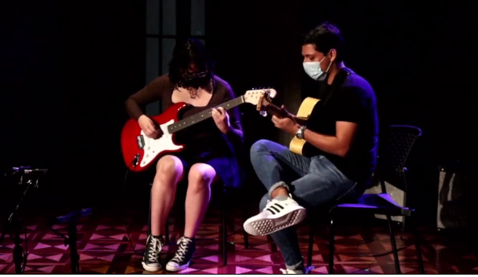

II Encuentro de jóvenes guitarristas de Guayaquil
En el Mes de agosto nuevamente se encontrarán en la Uartes jóvenes guitarristas de diferentes centros de educación musical. Pronto daremos fechas de esta oportunidad de conocer el talento guitarrístico de nuestros jóvenes
